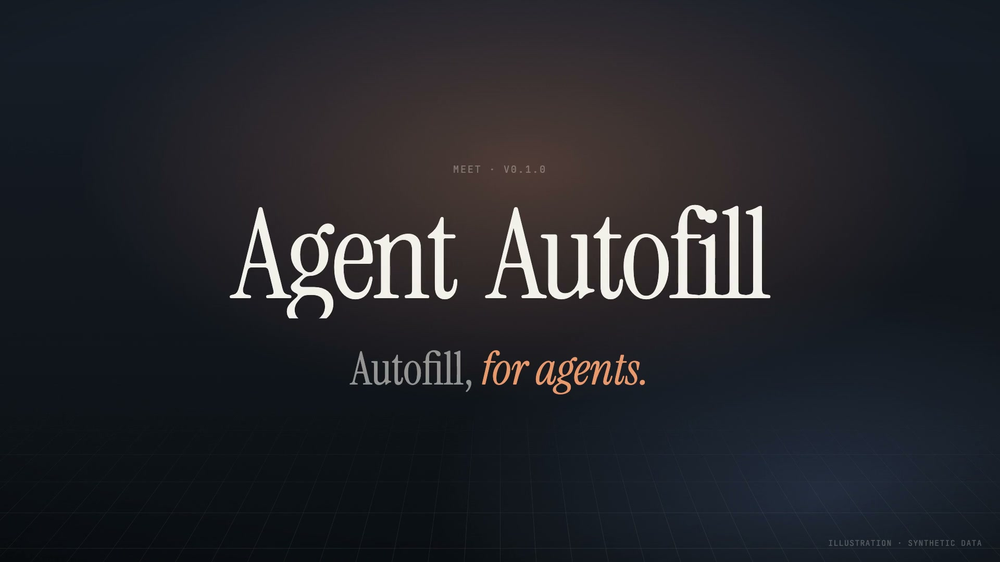
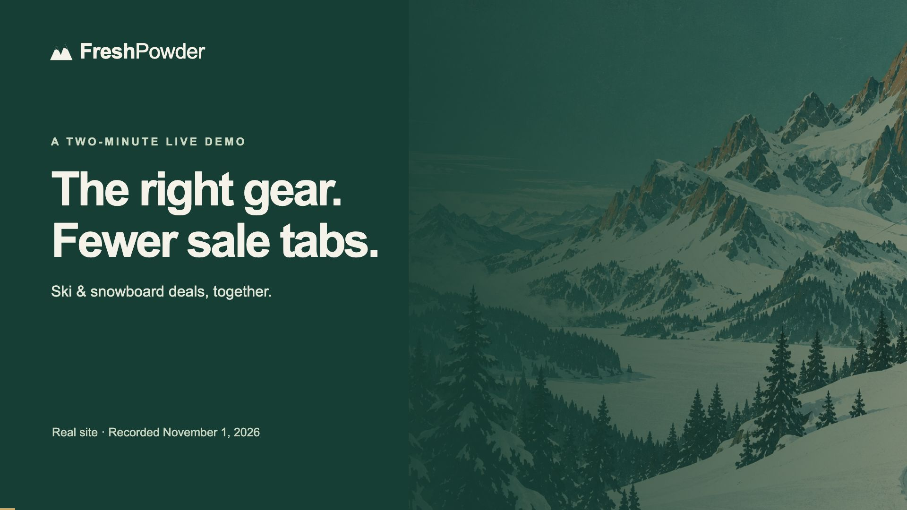

Background multi-cursor browser and macOS computer-use engine across unfocused Chrome tabs and native apps.
LIFAN CHEN · INDIE BUILDER & STAFF ENGINEER @ GOOGLE
Local tools, frontier ML, and AI agents—verified by evals.
01 · LOCAL Faster Mac Use · Agent Autofill · QuotaSwitch · Perks Reminder · Foliofen CLI
Interactive build inspector for Faster Mac Use, Agent Autofill, QuotaSwitch, FreshPowder, Perks Reminder, and AI Builder Brief. Full details follow in Selected Builds below.
Selected Builds
Filter by domain or hover any card to inspect its live telemetry and transition into its showcase.

Local-first personal vault and MCP broker for macOS agents with scoped credentials and explicit approval gates.
Unified multi-account switcher and 30s background quota auto-rotator for Antigravity and OpenAI Codex.

Ski and snowboard deal aggregator across 28 North American shops, filtered by size and budget.
Open-source credit card benefits, welcome bonus, and annual-fee ROI tracker with zero bank logins.

Evidence-gated daily AI brief distilling noisy launches into source-linked Top 10 technical developments.
Weekly six-minute Chinese podcast synthesized from USCardForum threads with source receipts via RSS.
Open-Source CLI Tools & Agent Infrastructure
Foliofen CLI →
Local Chrome harness for patient-owned MyChart health record exports (Markdown & JSONL).
CastForge →
Source-transparent Python podcast framework with StoryCluster gates, NotebookLM, and atomic R2 + RSS.
QuotaSwitch →
Unified quota-driven multi-account switcher and auto-rotator for Antigravity and Codex.
Perks Reminder →
Local-first credit card benefits, welcome bonus, and annual-fee ROI tracker.
Context Harness ↗
Filesystem memory layer and companion skills for coding agents.
Writing & Field Notes
Engineering essays paired with source-linked daily AI Builder Briefs.
Flagship Essays & Build Logs
Deep Dives
Why I built Foliofen CLI while the portal kept changing ↗
Exporting patient-owned records locally without handing a third party permanent account custody.
Show HN: Foliofen CLI — Technical feedback & failure modes ↗Why local control is only a real feature when recovery paths and scope limits are explicit.
Building Perks Reminder: A free, open-source benefits tracker ↗Keeping reminders, exportable JSON, and correction paths local without bank logins.
Daily AI Builder Briefs
59+ EditionsDaily field notes on AI developments that change what builders make and evaluate, with primary receipts.
About & Engineering Philosophy
How I design, verify, and ship local-first tools and agent harnesses.
I’m a Staff Engineer at Google building local-first software, agent systems, and the evaluation loops that make autonomous workflows trustworthy.
I focus on practical automation with clear boundaries: keep personal data on the user’s machine, measure every agent action with token and latency receipts, and require human approval before mutating external state.
The Evaluation Loop
Click a stage to inspect
01 · Source — Anchor on primary artifacts
Start from raw commits, protocol traces, and DOM snapshots rather than secondary summaries so every claim is reproducible.
Applied in: AI Builder Brief & Foliofen CLI